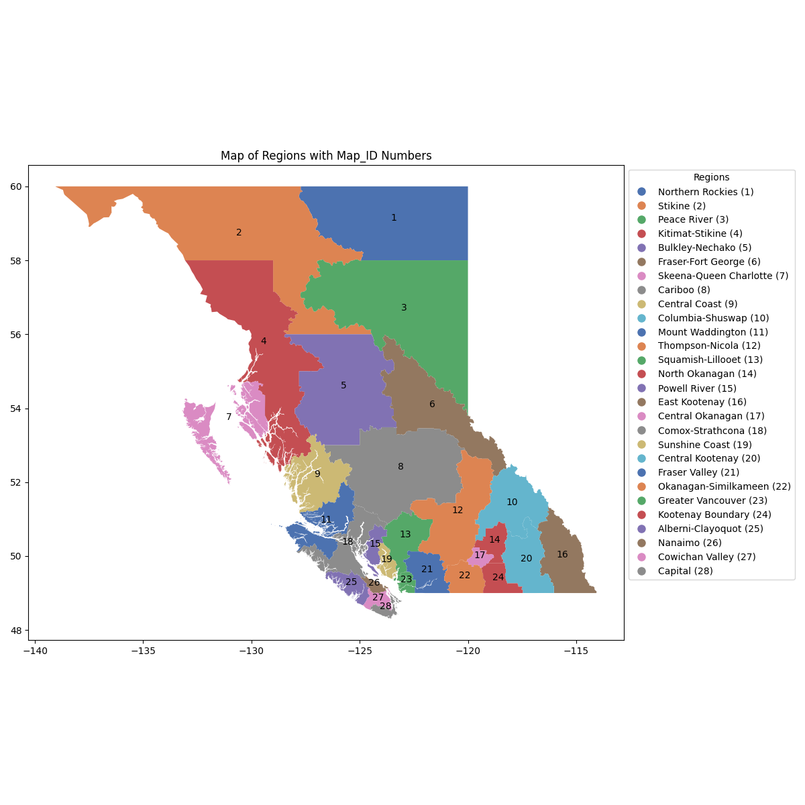
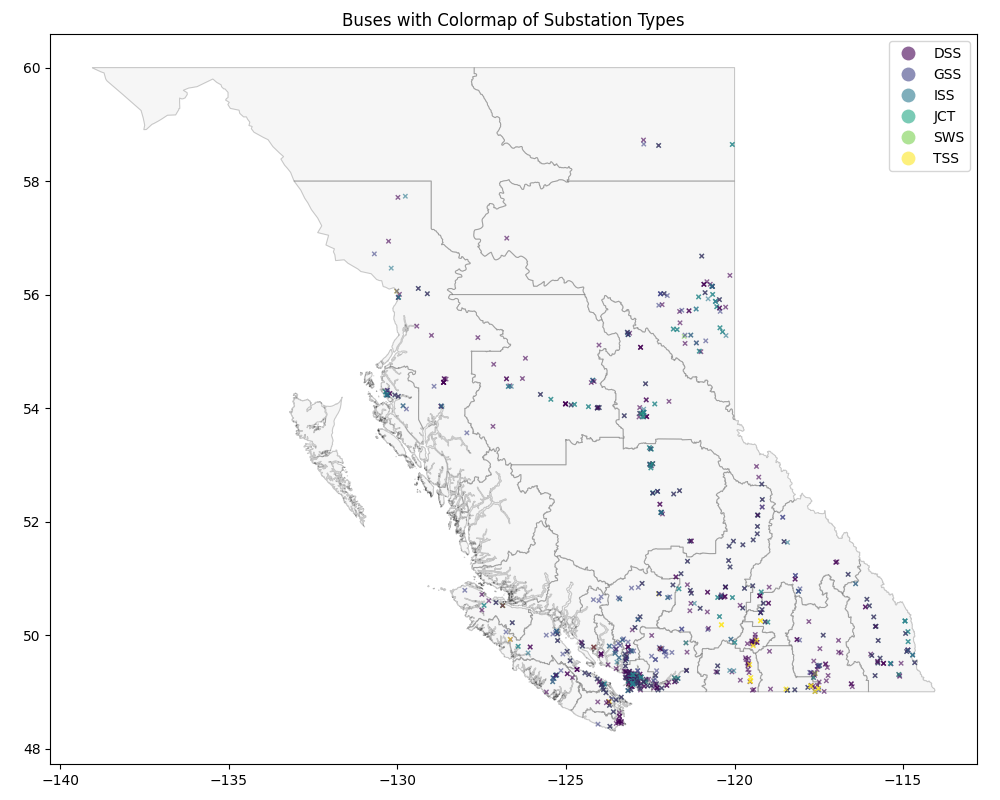
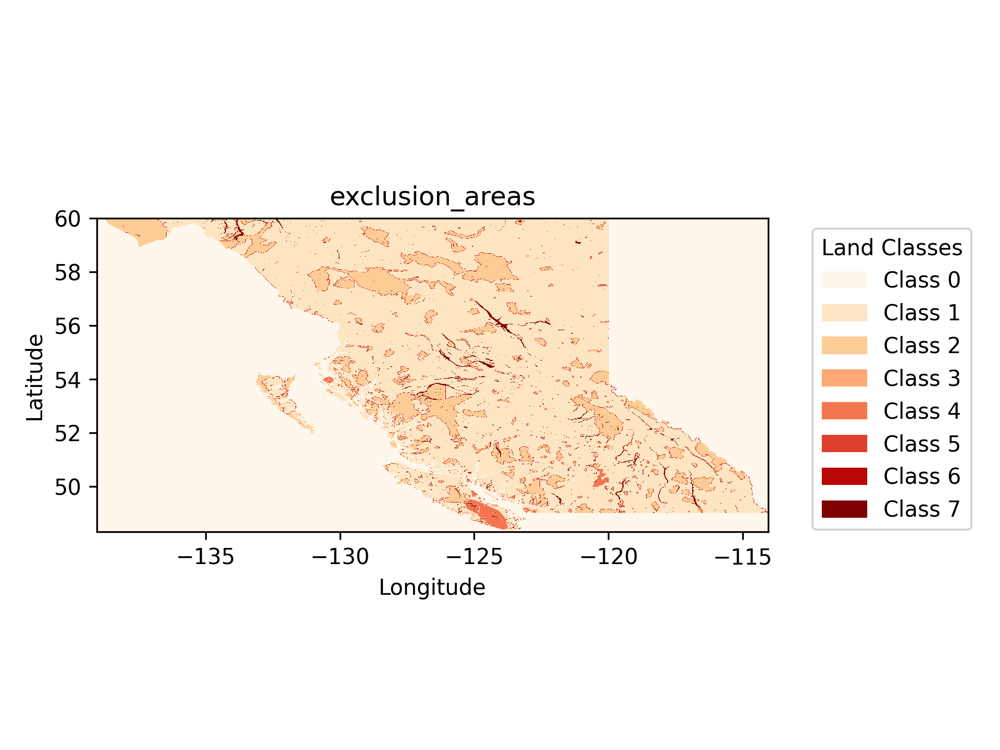
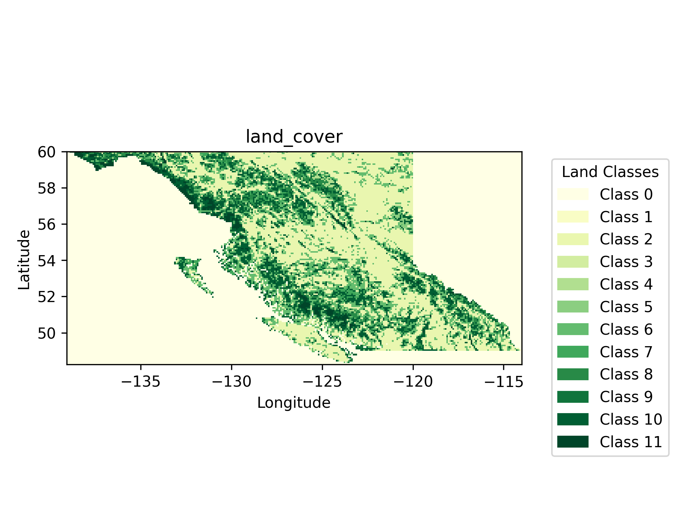
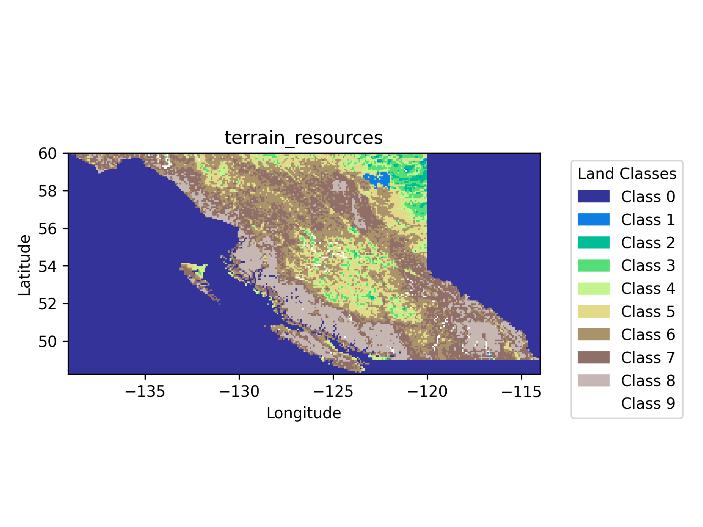

Linking Tool
Resources
Resource Timeseries
About the Region
Exclusion/Inclusion(s)
Resources
Resource Timeseries
Solar Timeseries
Wind Timeseries
Top Sites' Timeseries - Solar
Top Sites' Timeseries - Wind
About the Region
BC Boundaries
Grid Nodes
BC Boundaries

Grid Nodes

Exclusion/Inclusion(s)
Conservation Protected Lands
GAEZ Raster Plots
Conservation Protected Lands
GAEZ Raster Plots
  